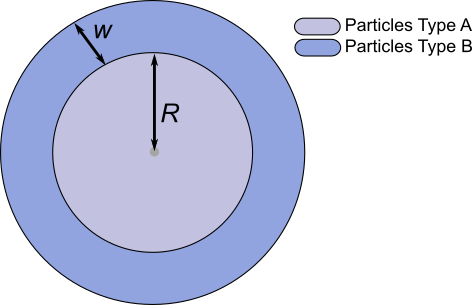
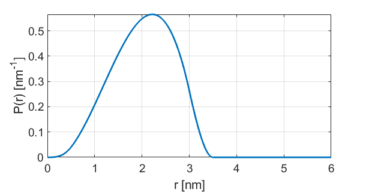

dd_shellsphere¶
Particles distributed on a sphere inside a spherical shell
Syntax¶
info = dd_shellsphere()
P = dd_shellsphere(r,param)
- Parameters
r- Distance axis (N-array)param- Model parameters
- Returns
P- Distance distribution (N-array)info- Model information (struct)
Model¶
{kind=link}

with
| Variable | Symbol | Default | Lower | Upper | Description |
|---|---|---|---|---|---|
param(1) |
 |
1.5 | 0.1 | 20 | Sphere radius |
param(2) |
0.5 | 0.1 | 20 | Shell thickness |
Example using default parameters:
{kind=link}
Description¶
info = dd_shellsphere()
Returns an info structure containing the specifics of the model:
info.model- Full name of the parametric model.info.nparam- Total number of adjustable parameters.info.parameters- Structure array with information on individual parameters.
P = dd_shellsphere(r,param)
Computes the distance distribution model P from the axis r according to the parameters array param. The required parameters can also be found in the info structure.
References¶
[1] D.R. Kattnig, D. Hinderberger, Journal of Magnetic Resonance, 230 (2013), 50-63. DOI: 10.1016/j.jmr.2013.01.007